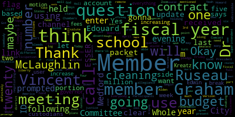
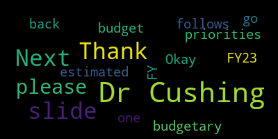
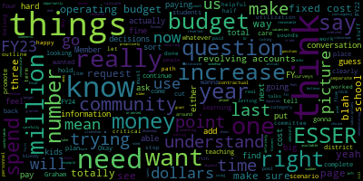
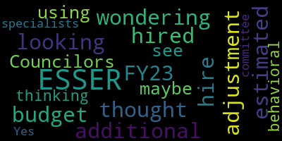

[Lungo-Koehn]: by using the following link or call in number, 13092053325. Please enter meeting ID when prompted, 942-4923-3647. Thank you. Good evening, Committee of the Whole meeting, fiscal year 24 budget. Today, April 3rd, 2023, from 4.30 to 6 p.m., there'll be a Committee of the Whole meeting to be held in person at the Howard Alden Memorial Chambers, Medford City Hall, as well as by remote participation on Zoom. Medford Community Media can be viewed on Comcast channel 15 and Verizon channel 45. Participants can log or call in by using the following link or call-in number. You can call 1-309-205-3325 and enter meeting ID 942-4923-3647 when prompted. Member Ruseau, if you could call the roll.
[Ruseau]: Member Graham.
[Lungo-Koehn]: Here.
[Ruseau]: Member Hays.
[Miller]: Here.
[Ruseau]: Member Kreatz.
[Miller]: Here.
[Ruseau]: Member McLaughlin.
[Miller]: Here.
[Ruseau]: Member Mustone, absent. Member Ruseau, present. Mayor Lungo-Koehn.
[Lungo-Koehn]: President, six present, one absent, if we all may rise to salute the flag. I pledge allegiance to the flag of the United States of America and to the Republic for which it stands, one nation under God, indivisible, with liberty and justice for all. Everybody's received a packet this evening, along with our packet we received on Friday. Budget update, I'm gonna turn it over to Madam Superintendent, Dr. Edouard-Vincent, to begin.
[X1f0jMHGEbc_SPEAKER_06]: Good evening. At this evening, I'm going to bring before the committee the second budget presentation. I'm going to request that Dr. Cushing please screen share for us.
[DiBenedetto]: Thank you, Dr. Cushing.
[X1f0jMHGEbc_SPEAKER_06]: As we've said before throughout last year and this year, as we enter the budget season, it's a time for us to really look hard at what our priorities are in terms of how the school will function, the district as a whole, and how we will be able to meet the needs of all of our students. And so as we go into this budget update that I'm going to share with you, There's a lot of information. And as I prepare and share this information with you, I want you to be aware that there will be a point where you're going to realize that we have to look at making decisions in terms of what our highest priorities are going to be for this fiscal year. So I'm going to start right now, but I am asking you to be open-minded, hear what our current situation is right now, and then for us to think together collaboratively on what next steps could end up looking like. So as I started at our last presentation, I had shared with you where our budget ended for this current fiscal year, fiscal year 23. We had a budget 68.9, which was our operating budget.
[DiBenedetto]: Dr. Cushing?
[X1f0jMHGEbc_SPEAKER_06]: The following slide shows our approximate percentages by function of how the budget was divided up in between all of the different key areas. Next slide. This slide that you're looking at is showing us FY, what our current FY23 budget approximate spending is. And the following slide is gonna show you, even though it says 24, there's a slight difference. And I'm going to unpack this information for you, because we do have some increases. So normally, Our personnel expenses are about 85, 86% of the budget. And with the increased costs, what we're going to be, what it's going to feel like this year is that it's closer to 89% is going to be allocated toward personnel costs. So I want to kind of put that out there because we do have some increases. So here on this particular slide, you see that we have the scales that are moving. And we are going to try with this budget cycle to maintain the balance, to continue the services that we're offering to our students, and where appropriate or based on priorities or needs, make the necessary adjustments there.
[DiBenedetto]: Next slide, please. So in FY23, our estimated budget was as follows.
[X1f0jMHGEbc_SPEAKER_06]: This was our ESSER funding. And this is what I presented to you last month on expenditures that we spent for engagement specialists, school nurses, behavioral specialists, reading specialists, EL newcomer teacher, and contractual stipends. Coming off of our ESSER funding totaled 1.6 million. HEAL for Literacy, our literacy programming, responsive classroom, Camp Mustang, again, we had funds dependent, transportation, we set aside 150,000, our emergency connectivity fund for technology, and then we had some miscellaneous items of additional counseling programs, our rebus professional development, which was for our administrators, and talking points, which is an online subscription, which allows us to communicate very frequently with all of our parent groups, our entire community, but it also translates for the members of the community that do not speak English.
[DiBenedetto]: Next slide.
[X1f0jMHGEbc_SPEAKER_06]: So our FY 24 budget drivers are going to be-
[Graham]: Member Graham, do you want us to hold all our questions till the end or do you wanna take questions as you go? Dr. Vincent, totally up to you. You wanna complete the slideshow and then questions after or?
[X1f0jMHGEbc_SPEAKER_06]: I was gonna try, but Member Graham.
[Graham]: No, it's totally fine. I don't care either way. I just wanted to know.
[X1f0jMHGEbc_SPEAKER_06]: Yeah, if I could go through the slides and if there's really something that I'm saying that isn't clear, cause I repeat some key factors again a little later in the slide deck. So my hope is that, some of your questions that might be forming. I may be able to answer some of them later in the slide deck, but I am trying to at least give an overview of like what it is that we're facing during this fiscal year, upcoming fiscal year. So for our FY 24 budget drivers, the arrows going up our growing student needs, rising costs and expenses. In particular, we have our new CBAs as well. And using our one-time funds, which is the ESSER money, which I had shared, we have that final $3 million for this year, but this is the final year.
[DiBenedetto]: Dr. Cushing? Dr. Cushing? Thank you.
[X1f0jMHGEbc_SPEAKER_06]: On this slide, it's showing you a side-by-side comparison for some of our estimated budget costs moving forward. And again, the previous slide.
[DiBenedetto]: Can you go back one please? Thank you.
[X1f0jMHGEbc_SPEAKER_06]: So as this is the final year of our funding. We have to really really think about some of the investments that we've made, and that after this year, after school year 2324. the monies are not gonna be there. So that's an additional $3 million that we have to really just think about. And so I wanna say that so that as I show you where we're trying to make some adjustments, it's something that we're gonna really need to think about. And so in this FY24 column, Again, these are estimated what we're expected to be paying in the following school year. So in some areas, there's a slight increase, and in other areas, there may be a slight decrease based on the total number of personnel that we're talking about. So where engagement specialists are concerned, we're seeing a slight decrease. The additional school nurse that we have, which is a floater, that's to be determined. For behavioral specialists, we're expecting a slight increase of 130,000. As of right now, we're still trying to fine tune it, but we may need to make one additional increase of a reading specialist, which would be 200,000. For an ELL newcomer teacher, again, that's to be determined. That number could fluctuate a little bit, a slight increase. And for the obligated contractual stipends for next payment, we're anticipating 750,000 that is set aside for those payments to be made. Hill for Literacy, Again, estimated we have an additional year of professional development with them and responsive classrooms slash restorative justice, professional learning opportunities. We are estimating a slight increase, potentially of $100,000.
[DiBenedetto]: Next slide.
[X1f0jMHGEbc_SPEAKER_06]: Again, for FY24, our counseling programs, we're expecting to stay in the same vicinity of about 80,000. For our Rebus professional development, that is to be determined. We're expecting that number to decrease slightly because we want to transition, continue working with Dr. Rebus, but in a slightly different capacity. talking points in some of our other subscriptions where we're in the process of looking at all of the user, what's the percentage of actual usage because we, we, we activated, a lot of subscriptions. And not all of them during the time of the pandemic, they were used more frequently but now that we're back in person. There isn't as great a need for all of the subscriptions and if there's a way even to take some of those monies and apply it elsewhere where it's actually being used. We are looking at that very very closely. our emergency connectivity fund where that's to be determined for our MBTA pass program, where we are currently paying 15,000 a month. Again, that would be for the committee to decide. So we left that as a to be determined. And for summer programming, we have that as to be determined for this summer and next summer.
[DiBenedetto]: Dr. Cushing, next slide, please. Thank you.
[X1f0jMHGEbc_SPEAKER_06]: So as we look at our employment agreements that we had thus far, FY22 was 2.5%, $960,000. Nearly one million was paid retroactively from FY22 funds. For FY23, our current fiscal year, 2.5% increase. $1 million was paid from additional funding that was incorporated into our FY 23 budget. We anticipated a 2% increase. So, we ended up. It's a nominal increase, a nominal savings, I should say. FY24 budget, it's a 2.5% increase plus 1% on the 100th day of school. And so that is a 1.1 million fixed cost increase based on our FY23 increase. And that number of the 1.1 million represents our teachers only, does not represent the remaining CBAs. So what does that mean? The reason that the base salary increases were such a frequent topic of discussion during our budget cycles is because as you incorporate the increase into the base, the base increases. And so if I were to go back to that earlier slide where I said how it's going to feel, we have a larger base that we have to take into consideration. So we're talking about essentially a $3 million increase in our base operating budget.
[DiBenedetto]: Dr. Cushing. So our FY 24 budgetary priorities.
[X1f0jMHGEbc_SPEAKER_06]: We talked about strategic staffing investments focused on our most vulnerable learners from literacy interventionists, social workers, adjustment Councilors, expanded school day staff, theater teacher, and due to increasing increased enrollment on our CTE side of the house. We have to think about more students attending CTE. It may be shifting staff from the comprehensive high school, but I do want to just put that on everyone's radar. That due to the increased interest in CTE programming, we will need to think about shifting resources to meet the needs to meet the demand of our students that are there. For professional development and training, again, restorative practices, curriculum training, we're in the process of getting ready to select a brand new literacy program at the elementary levels, at the elementary math. We will be entering our second year of additional professional development with the new programming. So we do need to keep that in mind for district-wide professional development and building-based professional development. Summer programming, which is grant dependent. We offered literacy, math, fine arts, and cell programming. And looking into seeing if it's the opportunity to add a traditional array of additional summer programming options. And so that is a need that we know we have. And then under a miscellaneous requirement, based on the new CBA, we need to work with outside scheduling consultants to merge the two schedules between the high school and the vocational school. where the high school is on a six day cycle and the vocational school is on a five day cycle. And so by having that alignment between the two schedules, it will allow for even greater flexibility between a vocational programming and a comprehensive side of the house. So really trying to give our students the greatest high school experience possible. and that needs to happen with schedules that talk to one another. Dr. Cushing, thank you. So some of our fixed cost increases. And I will, coming up shortly in the slide, I will show you some of this information in a different format. So some of our fixed cost drivers, I mentioned at my last presentation, the FY24 special education increases, which are significant, a 14% increase. projected to amount to potentially $1,000,000 or over $1,000,000 FY 24 contractual increases amount to 3.3 million in increases to personnel expenses alone. And again, as I said, a significant portion of the increases that took place in FY 22 and 23 were already incorporated into our last budgets because we were anticipating the negotiations. But still, with what's happening right now with FY 23 and 24, the increases have exceeded what was originally budgeted as a holding amount. So we have used as much flexibility as possible, but now we're really in an area where we have to really be cautious and strategic in terms of what we're going to prioritize as a district. are increases to FY 24 vendors. Those numbers are still slightly to be determined, but the numbers are going up and not down. And we still have the remaining three teams to negotiations that are remaining representing administrators, custodians, our security monitors and food service workers. So there are four more CBAs that need to be completed this year. And those numbers will be added to what's being presented right now. So at our last presentation, I talked about our strategic priorities, which are essentially our strategic plan, it's ACES priority one. Implementing curricular assessment and instructional strategies, anything related to academics and achievement priority to which is collaboration but building culture, also through community engagement priority three equity, how can we equitably support. All of our most vulnerable learners, those are students that need additional social, emotional learning supports, academic supports, and meeting the physical needs of our students. And priority for our school infrastructure and looking at student supports and providing a safe, supportive learning environment. So we will continue to look at the work that we do through a multi-tiered system of support. Tier one supports meeting the needs of all of our students. Tier two supports, again, providing scaffolded supports in tier three for our students that need the most greatest support. So keeping students at the center of our decision-making providing data to support student-centered learning, providing educators with necessary and needed professional development, especially as we're bringing on brand new curriculum, brand new programs, instructional programs, partnering with our community and building new partnerships to support our students. Working with families and caregivers to support and work collaboratively with the district. Always keeping the focus of preparing our students for college or career and really making sure that their high school experience prepares them for college or career. and to continue to thrive in supporting and making all of our students feel like there was a strong sense of belonging. So those are things that we're going to continue to do and keep front and center as we look at our budget this year. Dr. Cushing, I think this was a repeat slide. We can move forward. There's a slide before that. Thank you. So again, areas of concern. We may have to look at staffing or potential downsizing. Moving forward, our special education costs. The increase is considerable, although we know there will be some additional grant funding. but those numbers may fluctuate with respect to the budgetary impact. That is, it's kind of an unknown number. If changes need to happen, we need to meet the needs of our students. What are the impacts going to be on our students? And again, as a district, as an administrative team working collaboratively with the committee, We want to assess our genuine needs. We're going to advocate for additional investment. And three, we do want to plan for contingencies to ensure that we will be able to function fully. So this is another way to look at our anticipated increases. The out-of-district tuition increases of 14%. We're currently at 3.7 million, approximately there right now. And for FY24, we're expecting it to be in the vicinity of 4.2 million. for our transportation and van students, van transportation for students that are traveling for, that need specialized transportation. We're currently at 1.5 million for FY23. And for FY 24, we're expecting it to fall in the vicinity of $2.2 million. So that is another increase for transportation. Transportation for the school bus, our yellow school bus transportation. We are currently at 1.2 million. And we are looking at other contracts and looking at our existing contract and trying to see if we're expecting to possibly be, expecting approximately another $500,000 increase if possible. And this is looking at other options. So we're anticipating 1.25 million in transportation, school bus, Dr. Cushing. In addition for our utilities, gas and electric, we were approximately at 1.85 million this year for FY23. We're expecting it to increase to close to $2 million for FY24. And our cleaning contract in FY 22 was 400,000 and FY 23, it increased to 445,000. And so for FY 24, we are expecting an additional increase. And so if it's in keeping with what happened, to FY 22 to 23, it could be anywhere from 45 to 50,000 based on anticipated increases. So again, those are some of our anticipated increases for FY 24. Again, the next slide here shows that we have $3 million remaining on our ESSER budget. The good news is we did pursue a grant from DESE, and you will be hearing about that, that estimated $600,000 we were awarded. 200,000 in grant funding. So that number will now shift to 400,000 so that is a $200,000 savings, pursuing 300,000 but it's. Oh, it's at 600,000. Okay, thank you, Ms. Galuzzi for that. So we're still at 600,000. We did receive something, but we'll report out at that at another point in time. Balance of elementary math program, that's coming from our operating budget, but the balance was 250,000. Again, I mentioned earlier about the restorative justice bystander intervention and responsive classroom trainings, approximately 100,000 and 90, approximately 90,000 for Hill for Literacy. So some key determinations and milestones, Dr. Cushing. We're going to be thinking seriously about transportation, summer planning, the governor's budget proposal pending, and our additional upcoming committee of the whole meetings. And our last slide just shows where we are. in the process right now of starting to have our first of many budget meetings to kind of talk about where we are and what our priorities need to be as a district. Since we have two weeks back to back for this week, the intention was really to Let you know some of the anticipated increases that we're looking at for FY 24, and for next week's budget cow. We will be sharing more of the data from the budget survey that did come in. And we're looking at that and bucketing the information to kind of look at what were the things that kind of rose to the surface. But I wanted to at least give you that information. And I am open, ready for questions from the committee.
[Lungo-Koehn]: Member Ruseau?
[Ruseau]: Thank you, Mayor. I wish we had page numbers, because I'm going to reference slides and realize that I can't tell you what page it's on just now. But this one, you don't have to really go to it. Thank you for the presentation. I'm pretty sure there's one slide that everybody's interested in, but I'll cover my lower priority stuff first. Are we reducing the engagement specialists because we have not hired enough, or are we getting rid of some? I'm assuming we're not suddenly paying them less.
[X1f0jMHGEbc_SPEAKER_06]: So right now we do not have the full cadre of five and so we were holding steady at where we were based on based on what we were seeing with a lot of the unanticipated costs that, you know, as we just were looking at all of the different increases that we know are fixed increases. So we're looking at our expenses have gone up. and our personnel salaries have gone up. So it's both areas going up. And, you know, Dr. Cushing, I don't know if you could go back to that second slide. No, not the second slide. It's slide five. where it's kind of how we would be feeling about that, just to say, if you go to four first and then five, we're going up on both sides. The base is getting bigger. and we're going up on two sides. And if we're trying to juggle those two sets of numbers, both numbers are going up, the other and salaries.
[Ruseau]: Thank you. I guess I, so this is a presentation of, this feels like this is a presentation of our, approved budget allocation versus our budget request. I mean, last year and the year before and time is wonky, but we specify what we wanted and needed to operate the district. And then we figure out how to squeeze all that down into the number we got from the city, but you're squeezing ahead of time, which means that when we go and ask the city council, I know that we have not hired a fifth engagement specialist. But I would like to see, you know, based on the person who's in charge of that, and obviously, and you all like is five even enough was the right number seven. And sure, hiring is hard, but if the right number is four, then this makes no difference to me going from five to four, especially since we have four, it makes sense. If the right number to support our kids who are trying to recover from the pandemic is seven, well, we should be putting seven down here. So we know when we ask the city council, whatever the number is, if we say we need $77 million and we get a smaller number, in the mayor's budget, well, that's the way it's supposed to work. But going in already with chopping, and if you're telling me we don't need five engagement specialists, and the kids are fine, and their specific role for them is enough, then I'm gonna believe you, because I obviously can't know that. But you've just described this as a way to save money, and it seems like that's the step. In our last slide, that's one, two, three, four, five, six, That's like step six and step seven, except we're only in step two. So, I mean, I see that the reading specialist went up, I'm assuming we didn't double somebody's salary, so that's great news, but that's not a money saving situation. So this slide is sort of a mixture of attempts to save money which I have no problem with saving money, but I don't know, like in the very first line there, is five, four, what's the right number? Because the kids aren't okay. Lots of them are, but not all of them are. And to be cutting at this early phase just seems backwards. I'll just go through one more of my questions before we let some of my colleagues speak I have other questions but I'm in the budgetary priorities expand expanded school day staff is that just another way of saying after school. Yes, thank you. It's around trying to do this around care workers and I guess I'm surprised by that number because I pretty sure we've never budgeted anything for after school other than the director, and that the rest is just covered in the revolving account. So this to me seems to suggest that we're going to use our allocation that we get from the city and actually spend some of that on afterschool? Is that correct?
[X1f0jMHGEbc_SPEAKER_06]: We are using our revolving accounts as well. This was really just, it's a key priority because the afterschool programming is definitely an area where we're trying to beef up staff. And so one of the ways. It's not for a lack of trying, we have been trying, like, every way possible to recruit additional staff to support our programming. And so with the creation of this new position, we would hope to have staff that would be working part of the day during the instructional day, and then helping to cover with the after school programming, so they would be built in. They would be staff that are part of. So, essentially they would be like surround care, and instead of doing a traditional school day they could do like after school maybe like 11 or 11 to six or 12 to six. We're trying to so that wouldn't that would in fact. mean we'd have like a double head count in some of the buildings or throughout the district but also helping to meet an after school need. So it's it's it's trying to be creative it's it's something that we've talked about before. And so, we would definitely be. using revolving accounts to the extent possible to help support that as well. But it is something that we wanted to have as a need so that we were at least beefing up or trying to beef up and have additional staffing to support our afterschool programming.
[Ruseau]: Thank you. I certainly didn't have any problem with exactly what you just described. I just want to make sure we don't get into any kind of slippery situation around our operating budget and what it covers. Cause it covers K to 12 and the school day. And then if we want to start pulling other stuff in, you know, like then that expands our scope of what our budget is supposed to cover. And if that happens, I think it's an important, I mean, this is perhaps in one FTE. So this is not the scenario, but like if Medford rec just suddenly became part of the public school system, our budget would go up whatever the Medford rec budget is, presumably. So I just want to be careful when we're expanding our scope because then it makes year over year analyses of how much of the public school spending, those kinds of things really hold a lot of weight, especially if you're doing an override and you're like, suddenly it looks like you grew this huge amount and somehow you still can't make it work. So I just want us to be really careful about what in after school stuff ends up being part of the operating budget, the number we approve, because that number stick, I mean, I personally look at over 20 years of our budgets. And there's surely been that exact situation somewhere along the way, where there was a big jump, but it wasn't because anything changed. We just, you know, our scope changed. So I just think we have to be really careful about that. Thank you.
[Graham]: Member Graham, can you tell me what the total ESSER grant is? What's the complete ESSER number that we've been granted from the feds? All three combined, yeah.
[X1f0jMHGEbc_SPEAKER_06]: I'll get that in a moment, what the total for all three was. I don't have that number. I know going into FY 24, we have 3 million left. So I'll just be on the lookout for that.
[Graham]: Okay, and then I think what I would like to see somehow is a picture that says like, here's all the money that we have, whatever the number is. I think it's 7.2 or 6.7, something like that, right? And then like, what did we spend in FY22? What did we spend in FY23? What do we plan to spend in FY24? So that we can see like, how did we get to the place where there's $3 million left in FY24? Because like, if I count up what's on the FY23 page, if there was a total on the page, it would be 2.7, I believe. And if there was a total on the FY22, four number, it would be 1.5, I think, based on what I tried to calculate. And so I guess I'm just trying to understand like one of the things that we had to do last year was pay for things that were operating budget, clearly operating budget oriented with ESSER. And want to know like where does that fit into the equation of like how we're ticking down our ESSER funds because we should spend all of it but more importantly if we have to make plans for that money to come back into the operating budget we need to know and I don't feel like I know what those what those things are that we have put in ESSER that are not one time that are recurring that either we're gonna have to make a choice about or find money to pay for So, when I think about Essar like in my mind, there's a picture that shows how the money has been spent over time and where there are things that if we wish to continue them because it's reasonable to think that you would that we are going to have to find a way to pay for and that doesn't have to be this year but I think we need to know that this year so that we can think carefully about what else we spend this that money is no longer available to us. And I know it's just one year away, one year from now, we'll be having that conversation, but I want to make sure we know what it is. But I don't think that means, to Member Ruseau's point, that just because we have vacancies in a position that we don't need them. So I do echo his comments about wanting to make sure that our initial budget request is actually the request that outlines what we need to promote teaching and learning in our district and not the doomsday scenario or the like contingency scenario. Like I totally understand hard decisions and we will have to make them at some point in time, but I want the budget to be, what do the students need? And I don't think that means we cannot cut things right now. I think if there are things that we are paying for that students aren't using or that they don't need, we should be proactively demonstrating to the community that we care about that and we are looking for those ways to eliminate spend. So if there are subscriptions out there, that we're not paying for, for example, that we're paying for and the utilization is really low. I think the first question should be, why is the utilization low? Like, why did we use it in COVID and all of a sudden we don't need to use it anymore? Is that because we've reverted back to some older method of how we communicate information to kids. And is that what's right for kids or is that just what's comfortable in the classroom? I'm not sure. But if the answer really is like, this is not a resource that we need as a district, I think we should definitely in this phase of the budget, like remove those things because I want, I do want us to demonstrate to the community that we, Like we all know that there is no open checkbook right like so if there are things like that, where we know that. We should be like reducing those things I want us to do that I don't want to play a game, where we say we need everything, and then we really can like cut things out like I just don't think that helps the Community or anybody in the process, so if there are things where. We have staff that legitimately we do not need to promote teaching and learning. We should be like looking at reflecting that in our, in our request. Like we should not be waiting to do that until the very last minute. But I, I, we have done a lot of work on this committee for the last four years to really tell the community what we need. And we should not stop doing that. Even if we think we're going to have to say we had to make hard decisions and these things have to come out. We can't stop telling the community like what the public schools need because we will be doing ourselves like a bigger picture disservice that I think this committee has worked really hard to sort of combat against in terms of the You know what the average voter thinks about how we spend our money and that we're doing it responsibly so I would like to see a clear, crisper picture of ESSER. And particularly, these are things, if you want to continue these things, we have to find operating budget for them next year. It would be really helpful to know that right now. So those are my ESSER questions.
[X1f0jMHGEbc_SPEAKER_06]: And I think- Member Graham, I have a total ESSER funding was 8.35 million. 8.35, okay.
[Graham]: It sounds like there's a million and a half dollars not earmarked out of the three remaining. Is that right?
[Lungo-Koehn]: And you can, just to be clear on that point, member Graham, and I think Dr. Edouard-Vincent, you mentioned that this is the last year we can use it, but I think it bleeds into the first quarter of fiscal year 25. So, so I don't know how much the district plans on holding ESSER because we will need it for portion of it, especially when you have so many positions and you're going to have a fiscal cliff, there's going to be some sort of portion that is going to be held for fiscal year twenty-five. That's where how we're negotiating it on the city side too. You'll be able to use some revenue replacement, fiscal year twenty-four, the full year, and part of fiscal year twenty-five. So, that might be different on the ESSER side but we should definitely take that into account. Yeah.
[Graham]: So, I think on the and I will just ask my last ESSER question and then I do have some other questions, but I'm happy to let somebody else ask questions. It sounds like what I counted here was about 1.5 on the FY 24 side out of three. So there's still a million and a half dollars. So if some portion of that needs to be held for FY 25, I think we want to know what that is now so that we can make sure that if there is cushion there, just like we did last year, like the next presentation you give us can clearly outline like, these are things that belong in the operating budget, but like, if necessary, we could use ESSER to do these things in the short term. So I thought what we did last time worked really well to say like, this stuff is like critical path, we must do it, like we start with the top line fixed costs, then this is critical path, we must do these things, we have to have this stuff, it costs this. And then there's like another category of like, we need to have these things, but we could use ESSA for them for now. Versus like, these are the things that are really high priority and like, they could be either bucket, but these are, you know, sort of decisions you're gonna have to make. And then we were able to say, we want category A, B and D. to be part of our ask. So I think that was a really effective way for people to understand all those variables.
[X1f0jMHGEbc_SPEAKER_06]: And those variables came from the survey, the buckets of what people ended up prioritizing.
[Graham]: Yes, yeah. So I think that would be really helpful. And then there's one page where there is an asterisk that says, reflects preliminary information as subject to change after the results of the budget surveys. Does that mean this list does not integrate what we all put in our budget surveys?
[X1f0jMHGEbc_SPEAKER_06]: Yeah, it does not. So that'll be a much more developed list and categorized. Yes.
[Lungo-Koehn]: Got it. I do have some more questions, but I'm happy to let somebody else. Member McLaughlin, I think you had your hand up. Then Member Ruseau. Yes, then member Graham.
[McLaughlin]: Yeah, sorry. Thank you. Thank you for the presentation. Thank you for the visuals. I think they're It's always good to have those, so I appreciate them. And I guess I just wanted to ask if we can back it up a little bit in particular for folks who are watching or will be watching the budget meetings. And I don't know if now is the time or if you wanna do this at the next budget meeting, but I'd sort of like to give like a broad understanding to the community of sort of, what has happened the past three years, and to member Graham's point a little bit about the spending down, but also, you know, we started here, we had these ESSER funds, they were used because of this, you know, this is where we're at, you know, this is going to stop at this point, and we may very well be in a decision where we have to figure out what to do with that. And so sort of like a primer, if we will, if we could for like an intro to to school committee budget, I think would be really helpful. Just again, maybe for the next meeting, since I don't think it was prepared for this meeting, but I think for people who are watching, who don't really understand, and I think we, who are maybe more familiar with the budget are talking about a lot of things that people probably are not following and in particular with ESSER funding among other things. So I would ask if we could potentially have that. Yes. Thank you, superintendent. for the next meeting. I think that would be really helpful. And then I wanted to ask you about also the stages in the back, the last page for the budget process and tentative timeline. In that explanation, if you wouldn't mind sharing what the expectation would be for the April 3rd, 10th, and May 1 meeting. For example, you know, April 3rd meeting, we're going to go over, you know, a broad introduction to, you know, what we're hoping, what, you know, give an outline of what's been spent, how it's been spent and what we think, you know, maybe issues moving forward. So it's sort of a broad picture and then what folks can maybe expect for the 10th and the 1st. And again, I know this timeline is sort of tentative here. And then I wanted to ask you, didn't we have, or don't we have to have a public meeting to and I know these meetings are public, but don't we have to have a meeting specifically
[X1f0jMHGEbc_SPEAKER_06]: Yes, the public hearing based on how our budget cows go. If the committee chooses to go further or if you feel we get to a good point, it would either be the late May or early June meeting would be the publicly posted budget hearing. And that needs to be posted two weeks in advance.
[McLaughlin]: Thank you. Can we include that in the timeline? please, just so folks know when they see that, if they're looking for that, I think that's super helpful, thank you. And then I wanted to ask you just two more questions if I could. One is in the pie chart that is on page one, if you can explain for folks the student services at the 5.25%. The student, which- Sorry, pie chart. Actually, it's FY23 budget numbers, the approximations where you had the 5.25 student services.
[X1f0jMHGEbc_SPEAKER_06]: So that's inclusive of athletics. It's actually a more global term. It's inclusive of Any services that are related to students, including athletics, and that's like 55% it's separate from the special education, which is a 25%. And I can ask for some of the. the breakdown of the 5.25, I can get the full, I can get the full breakout and give you that listing for next week's presentation as well.
[McLaughlin]: Thank you. I'm just looking for wherever there might be some ambiguity. I think the other things sort of speak for themselves, but that maybe doesn't for other folks. So I appreciate that. And then the sort of the last, okay, my last question for now was the, the budgetary priorities, so the summer programming. And again, I know they're grant dependent, and I'm just wanting to ensure that we're, you know, and I'm sure we are because I know the central admin and sort of the way you folks are working, but I just want to ensure as we're planning that, that we're planning inclusivity and equity around the programming for the summer so that we're thinking about all of the student population, especially the most vulnerable affected by the pandemic. So just that's sort of more statement than a question, if that's okay. Thank you.
[X1f0jMHGEbc_SPEAKER_06]: Thank you.
[Jim Lister]: Member Ruseau, and then I actually have question two.
[Ruseau]: Thank you, Mayor. I signed the warrants, but I just realized I don't think I've ever signed a warrant for water. Do we not pay for our water? Does the municipality just provide it for free? Wonderful. That's nice that I have one bill. And my other question was on the slide, two slides before, the areas of concern. I appreciate the use of the color there because these items definitely caused some alarms. I mean, obviously it's too soon to really talk about staffing downsizing, but in the advocate for investment, I guess I'm wondering who's advocating and with whom? With whom? Whom? Yeah. I've never really got that stuff straight on the who and whom's, but I mean, I think it's important to advocate for investment, but I think this whole committee's part of our job is to advocate for investment and the communities and sort of everybody's responsibility. So I'm just wondering what is meant by that in this context? And if I might just suggest, is it just try to talk to the mayor, get more money in that in that in the mayor's budget. Is that what that means? Because I don't see the the administration going and I mean, spending your time talking to your state, our state legislators, like, I just don't know what that means.
[X1f0jMHGEbc_SPEAKER_06]: Just through this process. Again, to really look at what our needs are. I know that I presented some of the big surprises that we weren't expecting for this year, unexpected changes or unanticipated costs. And so I think just saying that we really do want to advocate for investment in the school system. looking at the needs of the district, looking at the needs of all of our students, and planning for contingencies, because there are so many unexpected contingencies and things that happen within the district. So that was just, I think it was just there to let you know that these are the areas that we're gonna try to continue to represent for the district. Thank you.
[Lungo-Koehn]: Thank you, Member Ruseau. Member Hays.
[Hays]: I was just wondering, I'm looking at the FY23 ESSER estimated budget. Did we hire, I thought we had hired additional adjustment Councilors using ESSER, but I don't see them on here. So maybe I'm thinking of the behavioral specialists.
[X1f0jMHGEbc_SPEAKER_06]: I do see the behavioral specialists that are listed here. I cannot say if their title was an adjustment Councilor, but I can find out specifically, was it behaviorist only? Was there behavioral specialists? But I think it might've been that and not an adjustment Councilor, but I can follow up to find out regarding that one.
[Lungo-Koehn]: Thank you. And I see Ms. Bowen shaking her head, affirming that it was behavioral specialists.
[X1f0jMHGEbc_SPEAKER_06]: Behavioral specialists, thank you.
[Lungo-Koehn]: I'm gonna let member Graham speak again, and then I have a question.
[Graham]: On the page that talks about fixed cost increases, if I am reading this right, I think I have a question about the second bullet, which talks about contractual increases. So in one place I saw a million dollars, and in here I see $3.3 million. Just point of information, I'm sorry, where are you? Um on the fixed cost increases slide looks like this. Hold on. Let me put my with like the pictures on the bottom.
[Graham]: Thank you. Yep. The happy kids. Is it is the increase over FY twenty-three 1 million dollars or 3.3 million dollars?
[X1f0jMHGEbc_SPEAKER_06]: For FY twenty Are you asking specifically on the special education increase, which is 1 million and then contractual increases amounting to 3.3 million? I'm not sure, you're asking, is it a $1 million increase?
[Graham]: So yeah, the personnel piece, I know special ed will go up a million and it says vendors will go up 100,000. But what I'm trying to understand is, The personnel increase, is it $1 million over FY23, or is it $3.3 million over FY23? And when I say FY23, I mean the number on the front, 68, 994, 776.
[Lungo-Koehn]: It's at least 3 million, which it says on the page prior to. It says 3 million and then 3.3, and that's because we haven't adjusted our last two budgets based on what we agreed in the contract.
[X1f0jMHGEbc_SPEAKER_06]: For FY24, we would need, in order to work with all of the changes and the adjustments, it would need to be in that three million for the contractual increases, I think, for all of them.
[DiBenedetto]: Okay.
[X1f0jMHGEbc_SPEAKER_06]: And it was just confirmed it's 3.3 million, but 3.3 million is is 4.7% increase over the 68 994.
[Graham]: If the contractual increases just 2.5%. How, how does the increase. 2.5, 2.5, this year's 2.9. But 68,994 included an increase, right? So there's already increase in that number. I guess I'm just trying to figure out, what's the real add over 68,994,776? Probably 4%, because the 2.5%, which was the COLA amount, that's not including steps and lanes.
[X1f0jMHGEbc_SPEAKER_06]: So it was like on the base, like it's, so it ends up, even though it's a 2.5% increase, it ends up feeling like it's closer to a 4% increase.
[Graham]: Okay, so 3.3 is the real number.
[X1f0jMHGEbc_SPEAKER_06]: Is the real number, and I just got that number confirmed.
[Lungo-Koehn]: Okay, so that'd be 2.9, 0.5, 0.5 plus steps and lanes.
[X1f0jMHGEbc_SPEAKER_06]: I don't know if that's the right number, but- The 3.3 million takes into account steps, lanes, as well as all of the other unions in addition to the MTA.
[Graham]: That's where the 3.3 million- Yeah, I just think my point is all of those budgets assume some amount of increase and paid out, the money paid out of those budgets. I'm trying to understand Are we like taking the whole, are we absorbing like more than just like the increments over one from one budget to the next or not? That's I guess what I'm trying to understand because I mean, as it stands, if I add those things up, I'm just trying to make sure I'm understanding correctly.
[Miller]: Our fixed costs are going up 6% this budget.
[Graham]: If I add all those numbers together and divide by 68, 99, blah, blah, blah, the fixed costs alone go up 6%. If that's right, it's fine. It's fine. That's a huge number because we haven't talked about anything else besides exactly how things are today. But I don't want that number to float around if it's not correct.
[Lungo-Koehn]: So maybe we can just double check these numbers, make sure.
[X1f0jMHGEbc_SPEAKER_06]: And that'll be something that I'll be able to definitely have for next week's presentation.
[Lungo-Koehn]: Okay. Appreciate that. My question revolves around the cleaning contract. And I just want to be clear. It seems like we have the custodians doing the work in all of our schools. and there's only one or two schools that use this cleaning contract?
[X1f0jMHGEbc_SPEAKER_06]: The McGlynn complex and the high school complex, which have the most usage, community usage, events happening, those are the two complexes that are used almost 24 seven, it feels that way. And so those are the two buildings that have the most usage. So in the evenings, we have the contract cleaners, that come in and do that second shift just due to the volume, the sheer volume of activities that take place. And the McGlynn Complex, essentially it's two schools in one, so you're talking about nearly 1,000 students. And the high school has 1,300 students, so it gets just the most usage, the most, the most rentals, etc.
[Lungo-Koehn]: The same amount of custodians in each school?
[X1f0jMHGEbc_SPEAKER_06]: During the day shifts? I want to say yes, but I can get a specific number on I think there are more custodians assigned to the high school just due to the high school being as large as it is.
[Lungo-Koehn]: It's so just I guess, a thought or maybe an update we could get next week or the week after is will we be increasing based on the percentage increase, will we be increasing any user fees for outside agencies that use our schools to account for some of this increase in cleaning costs? Maybe break down of what user fees we're bringing in now, so we know that that's being covered. On this topic, Member Graham and Member McLaughlin.
[Graham]: can I just make a suggestion that we like totally separate the revolving accounts because all of that goes into revolving accounts. And I think to the point of afterschool, like none of that belongs in the conversation about 68, 996, bloody, bloody, blah, because I think it muddies the water about like what's in there and what isn't. I think if we can get all of this work done by May 15th, we'll have some breathing room and we could actually have the conversation around revolving accounts that I feel like we've wanted to have for a really long time and we've just never been able to have because it's always like a crunch on the budget. But I think to your point, like if we're, we're going to incur additional costs like the the user fees need to go up if we're letting people use the building because the cost of letting them do that has gone up. So, I think and I would just like some transparency overall into our revolving accounts. It's like sort of broad statement and I know there's like fifteen of them. So, it's like some more important than others but community schools, And it's a big one where after school, which I actually feel like we know more about than any of the rest, but there's a couple of really big ones. There's a pool. I think there's a pool one that's separate from community schools. I don't, whatever the big ones are, I would like to know, like, how does money flow in? How does money flow out? And like, what, what is contributing to all of that? Because we should be rate setting for all of those things, which we should have the time to do if we're able to finish our budget request by May 15th.
[Lungo-Koehn]: Member McLaughlin, then member Kreatz.
[McLaughlin]: Thank you. And just a quick question for the budget concerns. For the 14% increase in out of district tuition, is that because the schools have increased their tuition or is that because we have an increased number of students going out of district or is it both?
[Lungo-Koehn]: The governor. Yes, that's Governor Baker signed that before he left.
[Joan Bowen]: Yeah, so that's an increase based on the state and what they're doing is they want to raise their cost of living and also offer bonuses to keep staff members on board. So that was the increase across the board for all other district placements, except for the collaboratives.
[McLaughlin]: Okay, thank you.
[Joan Bowen]: So it's not an increased number of students? No. Okay, thank you. And I'll be doing a presentation next meeting regarding out-of-district programming and our current numbers and placements for you next week.
[Lungo-Koehn]: Member Gretz.
[63m6ohF-DtU_SPEAKER_07]: Yes, thank you for the presentation. Yep, so I was looking at the, it would be the slide for the FY budgetary priorities draft. And I just had a question. So where there's the need and it lists out the individual needs, I'm wondering, Does, do the figures tie back to the slide above? Like, I guess I'm wondering, like, so if I'm looking at the need for, like, theater teachers, CTE expansion, how much money, you know, would we need to fill those positions? Or, like, these are the priorities. So, like, just thinking about estimates, are we gonna see that at some point? Or is it here, and I'm just, like, not sure where it is.
[X1f0jMHGEbc_SPEAKER_06]: So the specific costs under draft, budgetary priorities, the draft, we have not provided official numbers. This was just, yes, we talked about the literacy interventionists, the reading specialists under ESSER funding, but, you know, additional social workers and adjustment Councilors, the extended school day before and after school staff. We have not broken out official numbers, like how many total FTEs do we want, eight FTEs, like two at each program or whatever the number would end up being. So we haven't given specific breakouts. It's just some of the pieces that we know we really would hope or like to see. So it was just kind of the restorative justice, the high school scheduling, which we talked about, and the broad array of summer offerings that we had offered last summer that we would like to continue to offer during the summer for our community.
[63m6ohF-DtU_SPEAKER_07]: Thanks. And I just had one follow-up question. So I'm wondering, you know, cause I know it's going to happen probably in the future. So like when we hear from the other departments, like the high school and the vocational school and the music program, the directors, like, will they have, you know, the budget priorities, like sometimes like I'm thinking ahead too much, but like we do get, you know, in another screen, probably in the future, just like, you know, their priorities and, you know, the need versus like critical, almost what Ms. Graham said, that was helpful having it identified, but I, I, I'm sorry, not critical, but like the category.
[Hays]: Yes.
[63m6ohF-DtU_SPEAKER_07]: Labeling it that way so that, you know, we can see in the cost associated with the labeling, like whether it's critical versus the category ABC and what the
[X1f0jMHGEbc_SPEAKER_06]: So this doesn't include, yeah, this will be coming in the next meeting. So this doesn't include the priorities or what was listed in the budget surveys. This doesn't include that at all.
[63m6ohF-DtU_SPEAKER_07]: All right, thanks. Okay, so coming up in the future, thank you.
[Lungo-Koehn]: Thank you for the presentation, Dr. Edwin-Vincent. I think we have, I don't know if we want to put it in a form of a motion. The questions are, I think you've written everything down.
[Hays]: So it's up to the committee.
[Lungo-Koehn]: I think Dr. Edwin-Vincent wrote everything down as we set it, but okay. Is there any more questions from the floor? Motion adjourned by Member Graham, seconded by Member Kreatz. All those in favor? All those opposed, we have a 10 minute break.
|
total time: 5.1 minutes total words: 692  |
total time: 7.3 minutes total words: 1123 |
total time: 0.82 minutes total words: 52  |
total time: 11.75 minutes total words: 2069  |
|
total time: 4.16 minutes total words: 733 |
total time: 0.33 minutes total words: 47  |
||
{kind=link}
{kind=link}
{kind=link}
{kind=link}
{kind=link}
{kind=link}